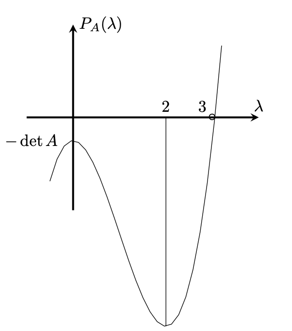

経済学で出る数学
ワークブックでじっくり攻める：応用問題
$3$次の一対比較行列の固有多項式
【問】
$3$次の一対比較行列
\[
A=
\begin{pmatrix}
1&a_{12}&a_{13} \\
\frac{1}{a_{12}}&1&a_{23} \\
\frac{1}{a_{13}} &\frac{1}{a_{23}} &1 \\
\end{pmatrix}
\]
に対して，その固有多項式$\det ({\lambda}E-A)$を求めなさい．
【解答】
$3$次の行列，
\[
A=
\begin{pmatrix}
a_{11}&a_{12}&a_{13} \\
{a_{21}}&a_{22}&a_{23}\\
{a_{31}} &{a_{32}} &a_{33}\\
\end{pmatrix}
\]
にサラスの公式を使うと，その固有多項式は
\begin{eqnarray*}
P_A({\lambda})&=&\det ({\lambda}E-A)\\
&=&\left|
\begin{array}{ccc}
{\lambda}-a_{11}&-a_{12}&-a_{13} \\
-a_{21}&{\lambda}-a_{22}&-a_{23}\\
-a_{31}&-a_{32} &{\lambda}-a_{33}\ \\
\end{array}
\right|\\
&=&{\lambda}^3-(a_{11}+a_{22}+a_{33}){\lambda}^2+
\bigl((a_{11}a_{22}+a_{22}a_{33}+a_{11}a_{33})-
(a_{12}a_{21}+a_{23}a_{32}+a_{13}a_{31})\bigr){\lambda}\\
&+&(-a_{11})(-a_{22})(-a_{33})
+(-a_{12})(-a_{23})(-a_{31})
+(-a_{13})(-a_{21})(-a_{32})\\
&-&(-a_{11})(-a_{23})(-a_{32})-(-a_{12})(-a_{21})(-a_{33})
-(-a_{13})(-a_{22})(-a_{31})
\\
\end{eqnarray*}
である．従って，AHPの一対比較行列に対しては，
\begin{eqnarray*}
P_A({\lambda})
&=&{\lambda}^3-3{\lambda}^2-\det A
\end{eqnarray*}
がいえる．
【解答終】
【メモ】
相加平均と相乗平均の大小関係を使うと，
\begin{eqnarray*}
\det A&=&\left|
\begin{array}{ccc}
1&a_{12}&a_{13} \\
\frac{1}{a_{12}}&1&a_{23} \\
\frac{1}{a_{13}} &\frac{1}{a_{23}} &1 \ \\
\end{array}
\right|\\
&=&\frac{a_{12}a_{23}}{a_{13}}+\frac{a_{13}}{a_{12}a_{23}}-2\geq 0.
\end{eqnarray*}
$P_A({\lambda})$を微分すると，
$
P_A^{\prime}({\lambda})=3{\lambda}(\lambda -2)
$
なので，$\lambda =0, 2$で極値をとる．まとめると， 縦軸切片は$-\det A\leq 0$で，グラフの概形は下図のようになる．

【Further Reading】
小畑・白石「AHPにおける3次と4次の一対比較行列に関する考察」大分大学理工学部研究報告第68号，pp.7-12（2021）
ふろく（２）応用問題 一覧へ